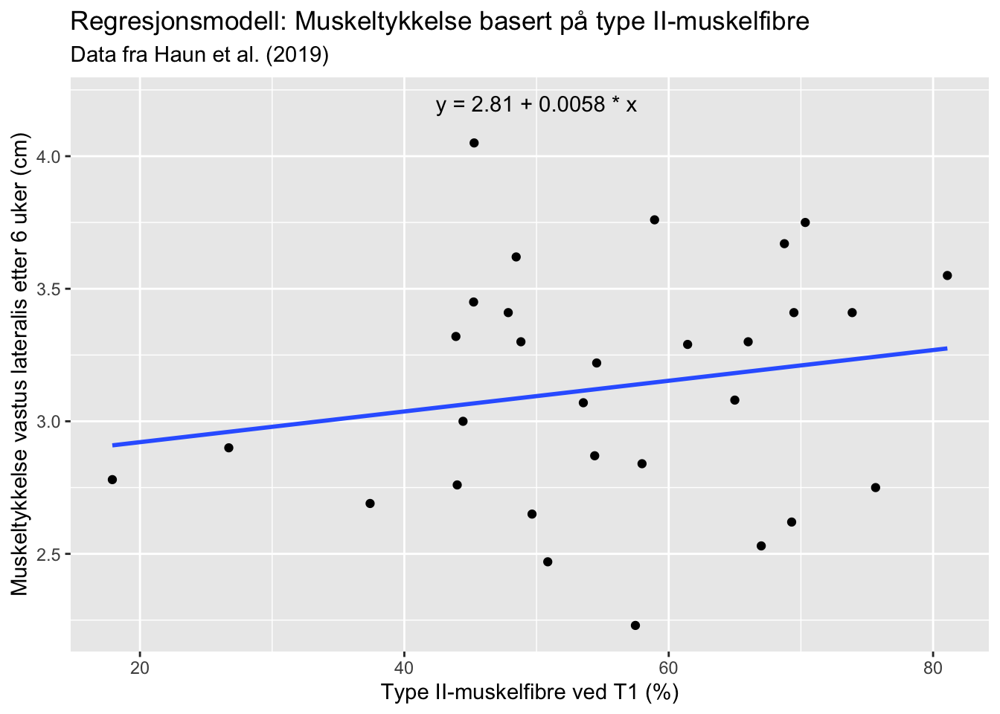
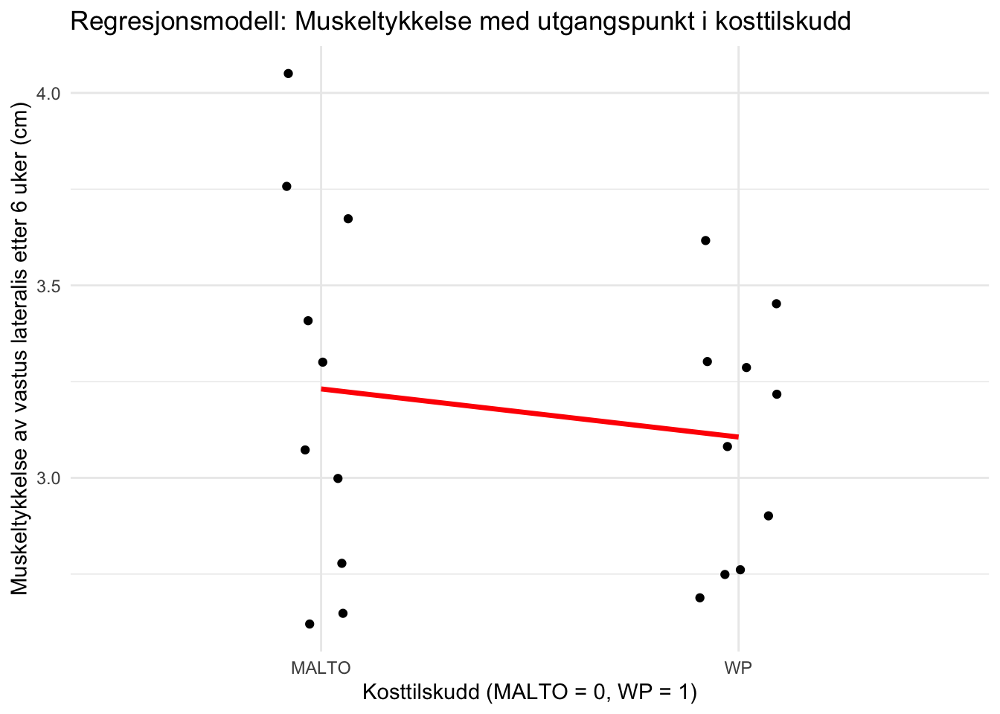
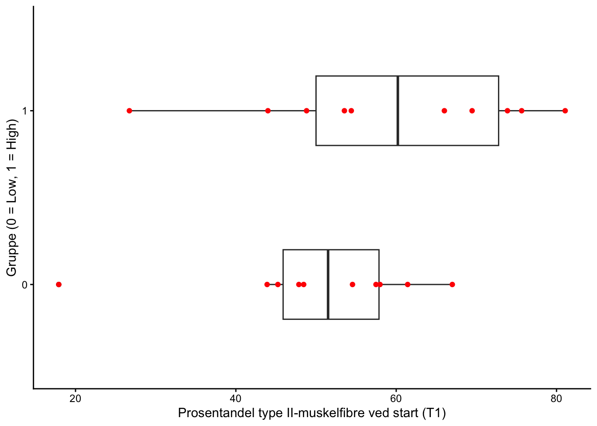
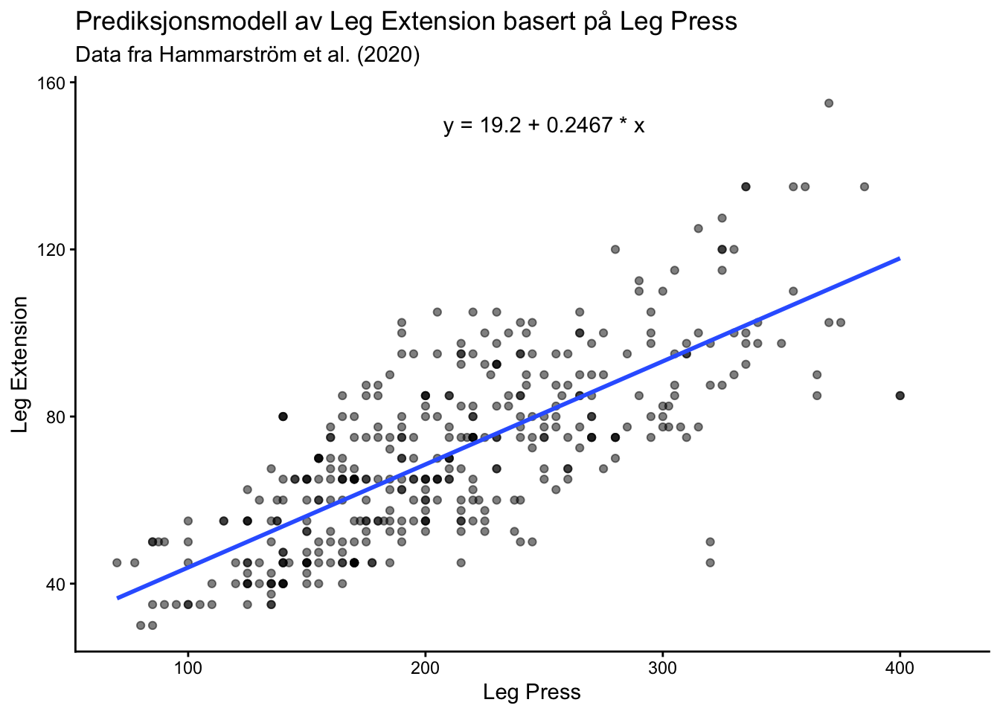
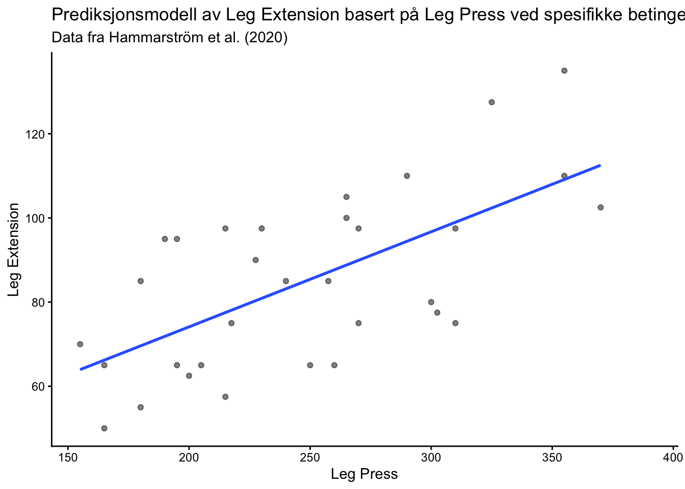
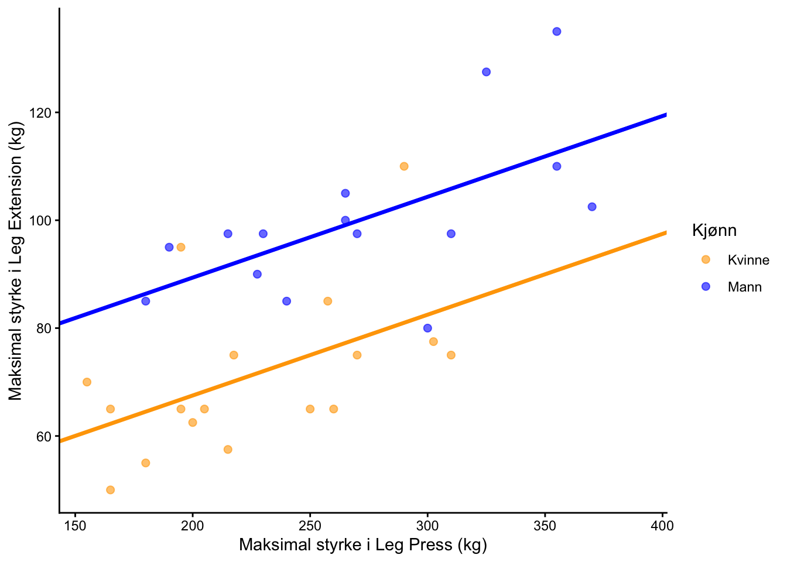
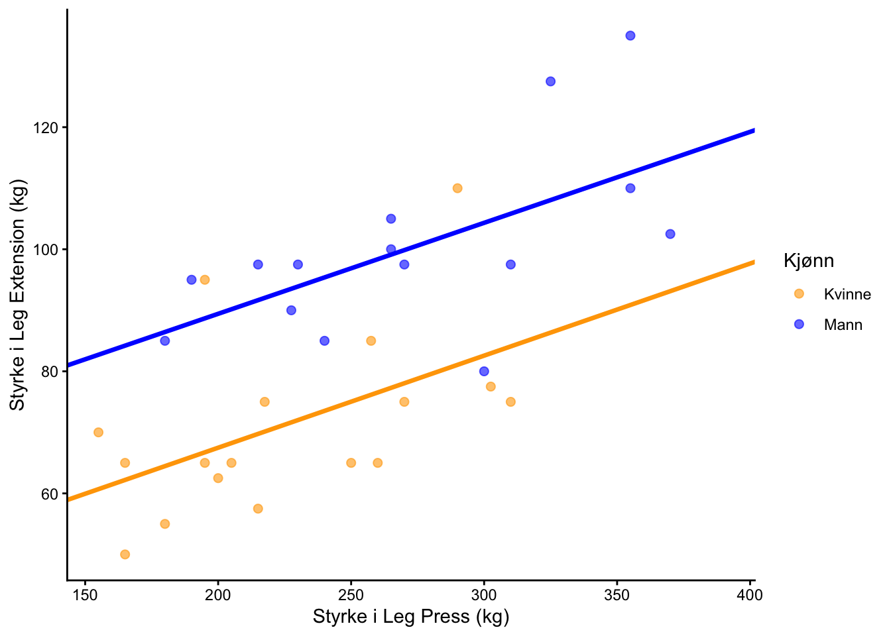
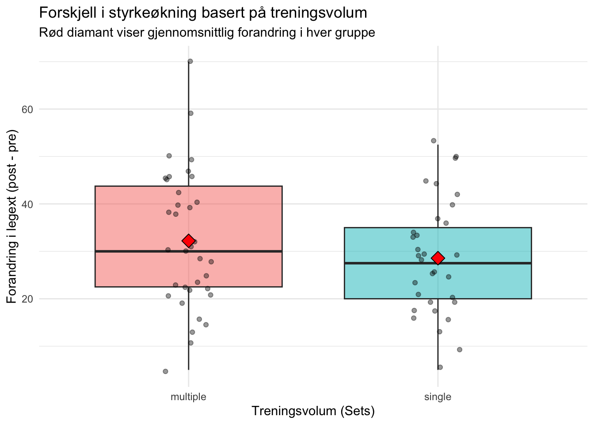

Arbeidskrav 3 - regresjonsanalyse
Oppgave 1: Beskrive sammenhenger
Oppgave 1.1: Sammenheng mellom to kontinuerlige variabler
Når man undersøker sammenhengen mellom to kontinuerlige variabler i en regresjonsmodell, benyttes det oftest en enkel lineær regresjonsanalyse. Målet med analysen er å finne og tilpasse en rett linje til et sett med datapunkter, slik at residualene – det vil si avviket mellom det observerte og det forventede – blir minst mulig. Enkel lineær regresjon bruker én uavhengig variabel (x) til å forutsi eller forklare en avhengig variabel (y). Forholdet mellom variablene uttrykkes gjennom den matematiske formelen:
\[y \sim \text{Normal}(\mu, \sigma)\] \[\mu = \beta_0 + \beta_1 x\]
Analysen under tar utgangspunkt i datasettet hypertrophy, og ser på sammenhengen mellom en utøvers prosentandel av type II-muskelfibre ved oppstart (PERCENT_TYPE_II_T1) og tykkelsen på vastus lateralis etter 6 uker med trening (VL_T3). Analysen ga følgende estimerte regresjonsformel:
\[\text{gjennomsnittlig muskeltykkelse} = 2.81 + 0.0058 \cdot \text{prosentandel type II-fibre}\]
Skjæringspunktet (\(\beta_0\) = 2.81) angir muskeltykkelsen i tilfellet x = 0, det vil si muskeltykkelsen hos en person med 0% type II-muskelfibre. Siden det biologisk sett ikke er mulig å ha 0% type II-muskelfibre, blir dette bare en matematisk konstant i diagrammet og ikke en reell fysiologisk verdi.
Regresjonsestimatet (\(\beta_1\)), som representerer regresjonslinjens stigningstall, er her 0.0058. Dette betyr at for hvert prosentpoeng høyere andel av type II-muskelfibre en utøver har ved oppstart, er det forventet en gjennomsnittlig økning på 0.0058 cm i muskeltykkelse etter intervensjonen. Regresjonsestimatet er imidlertid ikke statistisk signifikant, vist ved høy p-verdi på 0.323.
I eksempelet er Pearsons korrelasjonskoeffisient beregnet til r = 0.19, som beskriver styrken og retningen av den lineære sammenhengen. Siden verdien er nær 0 og har positivt fortegn, betyr dette at det kun er en svak positiv korrelasjon mellom variablene. Dersom man ønsker å se den faktisk, ustandardiserte effekten av muskelfibertype på endring i muskeltykkelse, er det regresjonsestimatet som må tolkes.
Både korrelasjonskoeffisienten og regresjonsestimatet beskriver den underliggende lineære sammenhengen i dataene, og de vil alltid dele retning. Dette vises ved likt fortegn. Der korrelasjonskoeffisienten er et standardisert mål mellom -1 og 1 som er uavhengig av enheter, vil regresjonsestimatet vise effekt målt i dataenes egne enheter, her cm per prosentpoeng.
Oppgave 1.2: Sammenheng mellom kontinuerlig og kategorisk variabel
Statistiske programvarer klarer ikke å regne direkte med merkelapper eller tekst, og er derfor avhengige av å kode om fra tekst til tall. Når man inkluderer en kategorisk variabel i en regresjonsmodell, benytter man såkalte dummyvariabler. Dette innebærer at programmet tildeler den ene gruppen verdien 0 (referansegruppen), mens den andre tildeles verdien 1 (sammenligningsgruppen). Modellen vil følge samme matematiske formel som i oppgave 1.1:
\[y \sim \text{Normal}(\mu, \sigma)\] \[\mu = \beta_0 + \beta_1 x\]
Her representerer \(\ y\) muskeltykkelsen i vastus lateralis, \(\beta_0\)er modellens skjæringspunkt, \(\beta_1\)er regresjonsestimatet – som her indikerer forskjellen mellom gruppene – og \(\ x\) er dummyvariabelen. Siden referansegruppens dummyvariabel er kodet som x = 0, vil skjæringspunktet i modellen representerer referansegruppens gjennomsnittlige muskeltykkelse etter 6 uker trening.
Et praktisk eksempel på dette er sammenhengen mellom den kontinuerlige avhengige variabelen «muskeltykkelse på vastus lateralis etter 6 uker» (VL_T3) og den kategoriske uavhengige variabelen «kosttilskudd» (GROUP) i datasettet hypertrophy, hvor dataene er filtrert til å kun omhandle karbohydratgruppen (MALTO) og proteingruppen (WP). Analysen i R ga følgende estimerte regresjonsformel:
\[\text{gjennomsnittlig muskeltykkelse} = 3.2310 - 0.1250 \cdot \text{dummyvariabel}\]
Dummyvariabelen for referansegruppen (MALTO) er satt til 0. Det betyr at skjæringspunktet (\(\beta_0\) = 3.2310) uttrykker den gjennomsnittlige muskeltykkelsen for gruppen som inntok karbohydrater. Det negative regresjonsestimatet ( \(\beta_1\) = -0.1250) representerer forskjellen mellom gruppene og betyr at utøverne som inntok proteinpulver (WP), i gjennomsnitt hadde 0.125 cm mindre muskeltykkelse enn utøverne i referansegruppen. Heller ikke her er regresjonsestimatet statistisk signifikant, vist ved høy p-verdi på 0.509.

Oppgave 1.3: Generalisert lineær modell
Vanlig lineær regresjon tar utgangspunkt i at dataene følger en normalfordeling. I tilfeller hvor den avhengige variabelen er binær – det vil si at den kun tar verdien 0 eller 1 – jobber man med en binomialfordeling med kun to mulige utfall. I analyse av slike data tar man i bruk en generalisert lineær modell (GLM), som åpner muligheten for å gjøre analyser på data som ikke er normalfordelt.
Datasettet hypertrophy er tatt i bruk for å visualisere dette, hvor man kunne stille følgende spørsmål: «Kan vi bruke type II muskelfiber hos utøverne ved oppstart for å forutsi om utøverne får god (HIGH) eller dårlig (LOW) respons med tanke på muskelvekst etter treningsintervensjon?».
Logistisk regresjonsanalyse i R ga et rå-estimat (stigningstall) på 0.04387. Dette rå-estimatet er oppgitt i log-odds, som gir lite mening når man forsøker å tolke det biologisk eller fysiologisk. For å kunne tolke resultatet gjør vi en eksponensiering av rå-estimatet for å få en odds-ratio (\(\text{OR} = e^{\beta}\)). I eksempelet blir dette \(e^{0.04387} = 1.045\). Odds-ratio er et forholdstall, og uttrykker den relative, prosentvise endringen i odds for hver enhet den uavhengige variabelen øker. En odds-ratio på 1.045 forteller oss at for hvert prosentpoeng økning i andel type II-muskelfibre hos en utøver ved start, øker oddsen for å bli en «high-responder» med 4.5%. Resultatet er ikke statistisk signifikant, vist ved p-verdi = 0.200, men resultatene indikerer en positiv tendens.
Siden den avhengige variabelen er binær (0 eller 1), kan vi ikke bruke en tradisjonell lineær regresjonslinje da denne ville forutsagt verdier under 0 og over 1. Modellens link-funksjon (logit) gjør om den rette linjen til en S-kurve, slik at modellen alltid holder seg innenfor 0% og 100%. Dette er viktig for at modellen ikke skal produsere tall som ikke gir biologisk eller statistisk mening i form av umulige sannsynligheter.
Figuren viser at gruppen med «high-responders» generelt har en høyere prosentandel type II-muskelfibre ved oppstart.

Oppgave 2: Predikere mulige observasjoner
Oppgave 2.1: Prediksjonsmodell med fullt datasett
Datasettet ble først filtrert til et bredt format der øvelsene «legpress» og «legext» ble tildelt hver sin kolonne, mens øvrige øvelser ble ekskludert fra datamaterialet. Prediksjonsmodellen følger strukturen:
\[y \sim \text{Normal}(\mu, \sigma)\] \[\mu = \beta_0 + \beta_1 x\]
Basert på den statiske analysen av det filtrerte utvalget, ble følgende estimerte regresjonsformel utarbeidet:
\[\text{gjennomsnittlig legext} = 19.20 + 0.25 \cdot \text{legpress}\]
Skjæringspunktet ( \(\beta_0\) = 19.20) angir den teoretiske startverdien i «legext» dersom en utøver tar 0 kg i «legpress». Regresjonsestimatet (\(\beta_1\) = 0.25) representerer prediksjonsmodellens stigningstall. Det forteller oss at for hver kilo en utøver øker sin maksimale styrke i «legpress», forventes det en gjennomsnittlig økning på 0.25 kg i «legext» for dette utvalget.

Oppgave 2.2: Prediksjonsmodell med spesifikke betingelser
Prediksjonsmodellen i oppgave 2.1 ble videreutviklet for å undersøke sammenhengen mellom «legext» og «legpress» under spesifikke betingelser. Datamaterialet fra «strengthvolume» ble derfor filtrert til å kun omfatte målinger fra «post» - det vil si testtidspunktet etter intervensjonen (time == «post»)– og for gruppen som trente med lavt treningsvolum (sets == «single»). Formelen under skal derfor kunne brukes for å predikere styrke i «legext» basert på «legpress» hos utøvere som har gjennomført en treningsperiode med kun ett sett per øvelse. Modellen fortsetter å følge den lineære regresjonsstrukturen:
\[y \sim \text{Normal}(\mu, \sigma)\] \[\mu = \beta_0 + \beta_1 x\]
Basert på den statistiske analysen av dette spesifikke utvalget, ble følgende estimerte regresjonsformel formet:
\[\text{gjennomsnittlig legext} = 28.94 + 0.23 \cdot \text{legpress}\]
Skjæringspunktet (\(\beta_0\) = 28.94) angir den teoretiske startverdien i «legext» ved post-testen for gruppen som trente ett sett, dersom styrken i «legpress» hadde vært 0 kg. Regresjonsestimatet (\(\beta_1\) = 0.23) representerer modellens stigningstall. Det forteller at for hver kilo utøverne i denne gruppen øker i «legpress» ved endt intervensjon, forventes en gjennomsnittlig økning på 0.23 kg i «legext». Modellen viser en sterk og statistisk signifikant sammenheng mellom øvelsene, bekreftet av en lav p-verdi (p < 0.001).

Oppgave 2.3: Prediksjonsmodell med utgangspunkt i kjønn
Modellen utvides fra en enkel til en multippel lineær regresjonsmodell, dette er for å undersøke hvordan kjønn «sex» påvirker prediksjonen av styrke i «legext» forklart av «legpress». Funksjonen lm() brukes fortsatt og R setter automatisk kvinner til referansegruppe (0) og menn til sammenligningsgruppe (1). Kjønn kan inkluderes i modellen på to forskjellige måter, for å se effekten i gjennomsnitt eller innad i kjønnene.
Dersom vi antar at økning i styrke er lik på tvers av kjønn - det vil at begge kjønn øker like mye i «legext» per kilo «legpress» - kan følgende formel brukes:
\[\text{gjennomsnittlig legext} = \beta_0 + \beta_1 \cdot \text{legpress} + \beta_2 \cdot sex\]
Kvinnenes regresjonslinje (sex = 0) følger formelen \(\text{gjennomsnittlig legext} = \beta_0 + \beta_2 + \beta_1 \cdot \text{legpress}\). Skjæringspunktet \(\beta_0\) viser hvor kvinnenes linje starter på y – aksen.
Mennenes regresjonslinje (sex = 1) følger formelen \(\text{gjennomsnittlig legext} = (\beta_0 + \beta_2) + \beta_1 \cdot \text{legpress}\). Estimatet (\(\beta_2\)) viser den faste, gjennomsnittlige avstanden mellom de to linjene.
Regresjonsmodellen ga følgende estimerte formel:
\[\text{gjennomsnittlig legext} = 37.54 + 0.15 \cdot \text{legpress} + 21.86 \cdot \text{sex}\]

Dersom det tas høyde for at kvinner og menn har ulike stigningstall, det vil si at treningseffekten er forskjellig mellom kjønnene, legges det til et interaksjonsledd i formelen.
\[\text{gjennomsnittlig legext} = \beta_0 + \beta_1 \cdot \text{legpress} + \beta_2 \cdot \text{sex} + \beta_3 \cdot (\text{legpress} \cdot \text{sex})\]
Kvinnenes regresjonslinje (sex = 0) følger fremdeles formelen \(\text{gjennomsnittlig legext} = \beta_0 + \beta_2 + \beta_1 \cdot \text{legpress}\). Effekten av «legpress» hos kvinner er det rene estimatet \(\beta_1\) (stigningstall).
Siden mennene er satt som sammenligningsgruppe (sex = 1), blir alle leddene i formelen aktivert. Med andre ord vil effekten av «legpress» hos menn bli summen av kvinnenes effekt og interaksjonsleddet.
Call:
lm(formula = legext ~ legpress * sex, data = strengthvolume_filt)
Residuals:
Min 1Q Median 3Q Max
-24.334 -9.179 -2.448 5.850 28.935
Coefficients:
Estimate Std. Error t value Pr(>|t|)
(Intercept) 37.306077 14.830915 2.515 0.0179 *
legpress 0.150893 0.064332 2.346 0.0263 *
sexmale 22.299020 21.603681 1.032 0.3108
legpress:sexmale -0.001796 0.085438 -0.021 0.9834
---
Signif. codes: 0 '***' 0.001 '**' 0.01 '*' 0.05 '.' 0.1 ' ' 1
Residual standard error: 12.78 on 28 degrees of freedom
(7 observations deleted due to missingness)
Multiple R-squared: 0.6567, Adjusted R-squared: 0.6199
F-statistic: 17.86 on 3 and 28 DF, p-value: 1.127e-06
Oppgave 2.4: Prediksjonsintervall
Oppgaven tar utgangspunkt i modellen fra oppgave 2.3:
\[\text{gjennomsnittlig legext} = \beta_0 + \beta_1 \cdot \text{legpress} + \beta_2 \cdot \text{sex} + \beta_3 \cdot (\text{legpress} \cdot \text{sex})\]
La oss si at en mann tar 150 kg i legpress. For denne verdien gir modellen et punktestimat, også kalt et gjennomsnittsestimat. I eksempelet gir modellen en estimert «legext»-verdi på 81.97 kg. Siden enkeltpersoner varierer naturlig, kan det være nyttig og naturlig å finne et område som man forventer at nye, individuelle observasjoner havner innenfor – et såkalt prediksjonsintervall. Man kan da med 95% sikkerhet si at vi forventer at en ny, enkeltstående person med den gitte verdien på legpress, vil ha en legext-verdi som ligger i området mellom 51.43 kg og 112.51 kg. Dette intervallet er relativt bredt fordi det tar høyde for både usikkerheten i selve regresjonsmodellen og den naturlige variasjonen (residualene) som eksisterer mellom enkeltpersoner innad i populasjonen.
fit lwr upr
1 81.9696 51.42947 112.5097Oppgave 3: Trekke slutninger
Oppgave 3.1: Endring
Velger å gjøre en lineær regresjon med sett som en uavhengig kategorisk variabel og endringen i styrke som en avhengig kontinuerlig variabel. Dette gjør det mulig å se på hvilken måte antall sett påvirker endringen i muskelstyrke før og etter treningsintervensjonen, og vil produsere et direkte estimat på forskjellen i gjennomsnittlig styrkeøkning mellom treningsvolumene.
Datasettet ble filtrert på øvelsen «legext» og tidspunktene «pre» og «post», og videre ble datasettet omgjort til et bredt format hvor de to tidspunktene ble tildelt egne kolonner med sine respektive verdier for hver deltaker. Det ble på den måten mulig å beregne den faktiske endringen mellom tidspunktene, som utgjorde den nye kontinuerlige variabelen.
Resultatene ga følgende estimerte regresjonsmodell:
\[\text{gjennomsnittlig endring} = 32.21 - 3.65 \cdot \text{sett}\]
Dataene er presentert som et boksplot. Rød diamant viser gjennomsnittlig endring i styrke for de respektive gruppene, og visuelt kan man se at forskjellen i høyde viser forskjellen mellom gruppene. Konstanten (\(\beta_0\) = 32.21) viser at gruppen som trente flere sett (multiple = 0) hadde en gjennomsnittlig økning på 32.21 kg. Regresjonsestimatet (\(\beta_1\) = -3.65) viser at gruppen som trente ett sett (single = 1) hadde en mindre gjennomsnittlig økning.

Oppgave 3.2: Generalisering til populasjon
Det aktuelle datasettet og regresjonsmodellen er basert på et begrenset utvalg av deltakere. Når man skal bruke regresjonsmodellen for å se på populasjonen ellers, så er det i hovedsak to statistiske mål man kan bruke. Dette er p-verdien (statistisk signifkant) og standardfeil (konfidensintervall).
P-verdien på 0.268 er betydelig større enn signifikansnivået som er satt til 0.05, som indikerer at forskjellen mellom treningsvolumene ikke er statistisk signifikant. Det betyr at resultatene ikke kan generaliseres, og forskjellen i nettopp dette utvalget kan skyldes rene tilfeldigheter og støy. Den aktuelle regresjonsmodellen kan derfor ikke brukes for å måle effekten på populasjonen ellers.
Standardfeilen måler usikkerheten i estimatene. Modellen har en høy standardfeil på 3.27, som man ser er nesten like stor som regresjonsestimatet. Dette gir en høy usikkerhet rundt tallene. Høy standardfeil gir lav t-verdi og høy p-verdi. Den høye standardfeilen viser at det er høy grad av tilfeldig variasjon, så det kan ikke konkluderes sikkert om effekten er reell i populasjonen.